立体/多视点视频简介
传统单视点视频是由单个摄像机拍摄某一场景得到的视频信号，摄像机的拍摄角度在某一时刻是固定不变的。立体视频一般由两个视点组成，它是根据人眼的双目视差原理，在播放时通过显示从略微不同的角度采集到的同一场景的两个视图，分别对应人的两只眼睛，形成双目视差，并依靠人的大脑将这些视频融合成一幅有意义的二维图像，从而形成立体感。
当前各种单视点编码技术的进步虽然提高了视频图像的质量和编码效率，但在根本上仍然没有改变场景的平面描述形式。而多视点视频则是由摄像机阵列从不同角度拍摄同一场景得到的一组视频信号，与单视点视频相比，多视点视频能够获取场景的三维信息，从而更加生动地再现立体场景。可以预见，多视点视频将在影视、医疗、远程遥测遥控、虚拟现实等方面拥有广阔的应用前景。
-
基于运动/视差联合估计的差错控制
鉴于视点间的颜色差异会降低视点间的相似度，影响预测图像的准确性，本项目采用颜色补偿策略实现多视点的颜色校正，提高基于视差估计关键帧编码性能。其中红色表示参考视点，蓝色表示编码视点。
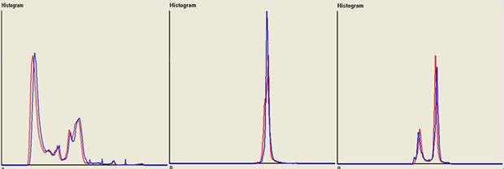
soccer序列颜色校正前相邻视点的Y/U/V分量的直方图
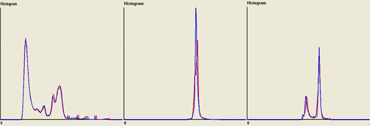
soccer序列颜色校正后相邻视点的Y/U/V分量的直方图
-
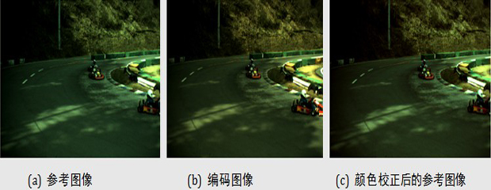
Race序列的相邻视点图像及颜色校正后对比结果
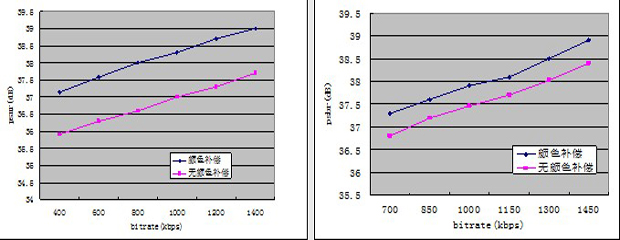
Soccer序列和Race序列颜色校正前后图像编码效率对比
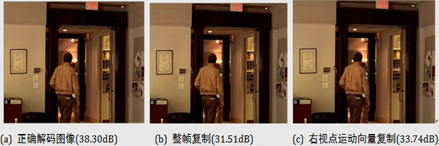
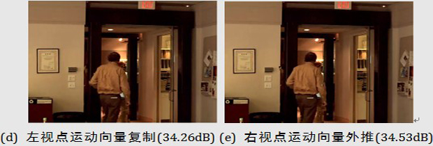
Exit序列视点2第11帧整帧丢失后的差错掩盖效果对比
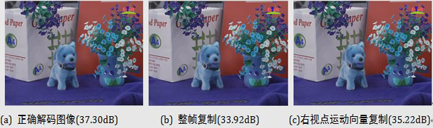
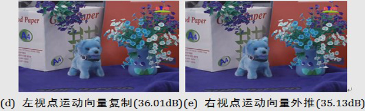
puppy序列视点2第5帧整帧丢失后的差错掩盖效果对比
-
基于视点合成预测的差错控制
多视点视频编码不仅需要较高的编码效率，同时需要视点间有较好的可伸缩性能，以满足视点间随机访问的能力。但是基于运动/视差联合估计的多视点视频编码框架在这两方面的性能都不够优越，主要表现在：(a)基于块匹配的视差估计对视点间信息冗余的消除能力有限，制约了多视点视频编码框架的整体性能；(b)此编码框架视点间的相互依赖性较大，影响了视点的分级伸缩性能。
为了兼顾多视点的编码效率和多视点的视点伸缩性能，一种基于视点合成预测的多视点视频编码框架将多个视点分为基本视点和增强视点，并利用各个视点的纹理信息提取出基本视点的深度图，再使用标准的编码技术对基本视点纹理图像和基本视点深度图像分别进行编码。增强视点编码时，首先使用3-D Warping技术利用基本视点纹理图像和深度图像生成增强视点的投影预测图像；然后对增强层预测残差使用标准的编码技术编码，以进一步消除投影预测残差间的信息冗余。此编码框架提供了增强层视点的任意存取性能，同时编码效率高于联合运动/视差估计的多视点视频编码框架。其编码效果如下图所示。
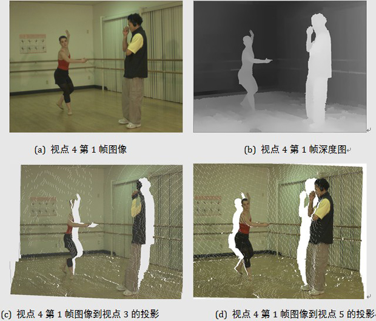
Ballet序列视点4第1帧图像到相邻视点的合成图像

Breakdancers序列视点4第1帧图像到相邻视点的合成图像故障
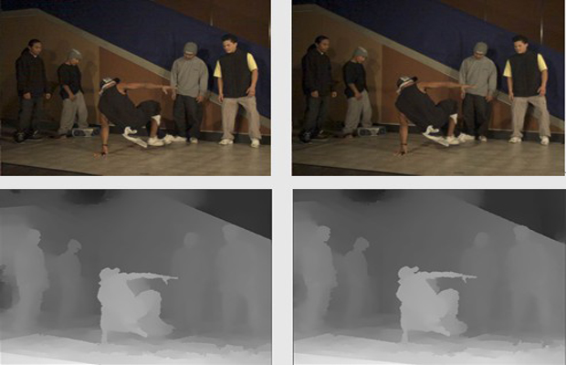
cam2和cam4参考视点的彩色图像及深度图像
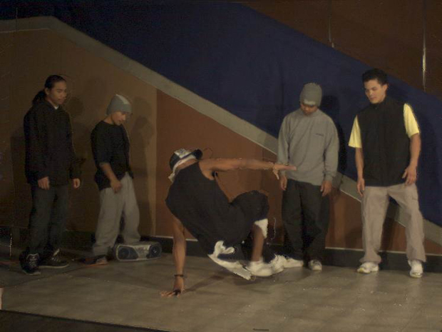
合成的虚拟中间视点图像（cam3）